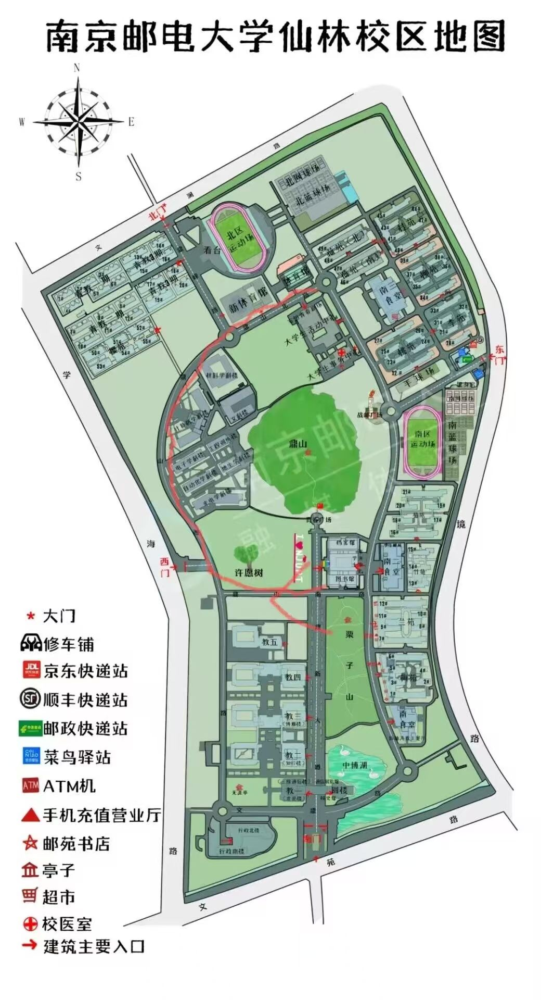

地铁 2 号线
仙林中心站
从南京站、南京南站换乘后可在此下车。周边接驳选择相对集中，适合作为携带行李到校的默认锚点。
到文苑路 9 号仍有一段地面路程01 / CAMPUS
在仙林与三牌楼之间切换，先看清目的地，再安排最后一公里。

步行 宿舍到教学区需留出余量，第一次上课建议提前熟悉路线。
骑行 共享单车按划定区域停放；共享电单车不得进入校园。
公共交通 地铁 2 号线到站后仍有地面路程，带行李时优先公交或正规打车。
校区地图图片仅供定位参考。建筑、道路、校门开放状态和临时交通组织请以现场标识及学校通知为准。
TRAVEL GUIDE
仙林校区依靠地铁 2 号线接驳，三牌楼校区靠近市中心的地铁 1 号线。带行李时，公交或正规打车往往比长距离步行更稳妥。
从南京站、南京南站换乘后可在此下车。周边接驳选择相对集中，适合作为携带行李到校的默认锚点。
到文苑路 9 号仍有一段地面路程位于校园东南方向。前往东侧区域或轻装出行时，可以和仙林中心站比较实时步行、公交及骑行路线。
不要只比较直线距离，应以目标校门为终点前往三牌楼校区最稳定的轨道交通锚点。出站后到新模范马路 66 号仍有一段地面路程，可按实时导航选择步行、公交或打车。
携带大件行李时不建议全程步行仙林：南京邮电大学、南邮仙林校区西、邮电大学北。
三牌楼：司背后、三牌楼、东柏果园及校区周边站点。
ARRIVAL ROUTES
以下时间是包含候车、换乘和最后一公里的保守预留，不是固定用时。
地铁 1 号线到新街口站，换乘地铁 2 号线往经天路方向，在仙林中心站下车后接驳到校。
建议预留 70—90 分钟地铁 3 号线到大行宫站，换乘地铁 2 号线往经天路方向，在仙林中心站下车后接驳到校。
建议预留 80—100 分钟乘地铁 S1 号线到南京南站，再按南京南站路线换乘；大件行李较多时可从正规上车点打车。
建议预留 120—150 分钟目的地填写南京邮电大学仙林校区，栖霞区文苑路 9 号。报到高峰按现场标识前往临时下客点。
不要提前假设车辆可以驶入校园TO SANPAILOU
目的地统一填写“南京邮电大学三牌楼校区，新模范马路 66 号”。以下为易记的主干路线，具体用时以出发时的实时导航为准。
乘地铁 1 号线往中国药科大学方向，到新模范马路站下车，再步行、公交或打车到校。
距离三牌楼校区相对较近，优先推荐乘地铁 1 号线往八卦洲大桥南方向，直达新模范马路站，出站后完成最后一段地面接驳。
无需换乘，适合第一次到南京的新生工作日可先查询校区交通车；公共交通可由地铁 2 号线到新街口站换乘 1 号线，到新模范马路站后接驳。
交通车班次有限，先查当天通知直接导航至三牌楼校区指定校门。报到或活动高峰可能临时管控，应服从现场下客和停车安排。
不要只搜索“三牌楼”，避免定位到商业街区RAILWAY HUBS
“离得近”不等于“车次合适”。先在购票平台确认到达站与班次，再决定地铁和接驳路线。
距离三牌楼校区相对较近，可乘地铁 1 号线到新模范马路站。也有部分高铁、动车和普速列车停靠。
南京主要高铁枢纽，车次覆盖更广。去三牌楼可乘地铁 1 号线直达，去仙林可换乘 2 号线。
地理上靠近仙林大学城，但停靠车次明显少于南京站和南京南站。只有在车票确实到达该站时再选用。
地铁到站后优先公交或正规打车，避免拖着大件行李长距离步行。
第一次从宿舍去教室多留 15—20 分钟；早高峰不要把共享单车当作唯一方案。
进城前先查返程末班车，错过地铁后只从正规平台和上车点叫车。
CAMPUS SHUTTLE
当前公开表为 2025 年 9 月 5 日起执行的工作日安排；法定节假日停运，寒暑假另行安排。
三牌楼始发，终到学科楼转盘
青教公寓或学科楼转盘始发
信息更新于 2026-07-22。报到接站、公交线路、交通车临时调整、地铁运营时间及校门车辆管理均以对应官方渠道最新发布为准。